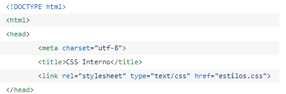

En la cabecera de nuestro documento HTML, más concretamente en el bloque head podemos incluir una etiqueta link con la que establecemos una relación entre el documento actual y el archivo CSS que indicamos en el atributo href:
es la manera más recomendable de añadir estilos a una página web. La ventaja radica en que no hará falta repetir reglas CSS en cada página, ya que estarán disponibles en el documento CSS y simplemente habrá que llamarlas.
